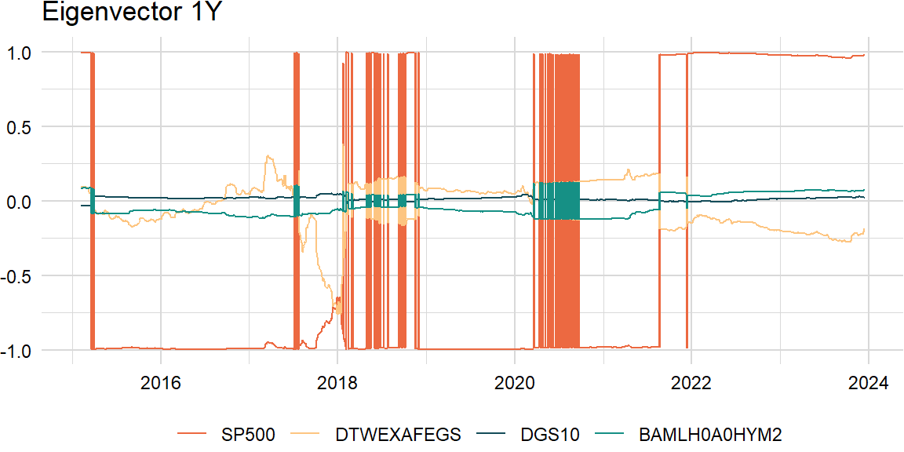
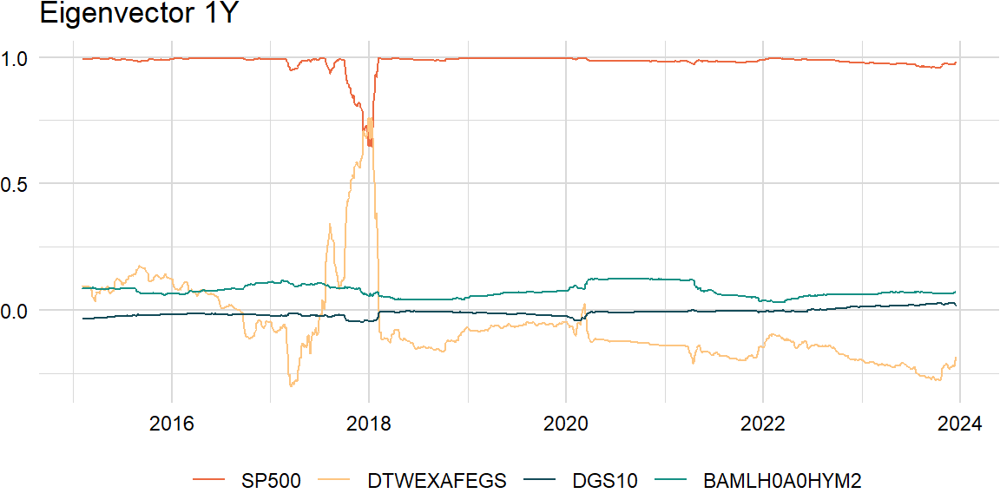

import pandas as pd
import numpy as np
import statsmodels.api as sm
import pandas_datareader as pdr
from scipy.stats import norm, chi2factors_r = ["SP500", "DTWEXAFEGS"] # "SP500" does not contain dividends; note: "DTWEXM" discontinued as of Jan 2020
factors_d = ["DGS10", "BAMLH0A0HYM2"]
factors = factors_r + factors_d
width = 252
scale = {"periods": 252, "overlap": 5}levels_df = pdr.get_data_fred(factors, start = "1900-01-01")returns_df = levels_df.apply(lambda x: np.log(x).diff() if x.name in factors_r else -x.diff() / 100)
overlap_df = returns_df.rolling(scale["overlap"], min_periods = 1).mean()
returns_df = pd.concat([returns_df, overlap_df], keys = ["returns", "overlap"], axis = 1)# import datetime
from scipy.optimize import minimizeimport ostickers = ["BAICX"] # fund inception date is "2011-11-28"
prices_df = pdr.get_data_tiingo(tickers, start = "1900-01-01", api_key = os.getenv("TIINGO_API_KEY"))C:\Users\jason\AppData\Local\R-MINI~1\envs\R-RETI~1\lib\site-packages\pandas_datareader\tiingo.py:234: FutureWarning: In a future version of pandas all arguments of concat except for the argument 'objs' will be keyword-only
return pd.concat(dfs, self._concat_axis)prices_df = prices_df.pivot_table(index = "date", columns = "symbol", values = "adjClose") \
.tz_localize(None)returns_cols = list(zip(["returns"], tickers))
overlap_cols = list(zip(["overlap"], tickers))
returns_df[returns_cols] = np.log(prices_df).diff()
returns_df[overlap_cols] = returns_df[returns_cols].rolling(scale["overlap"], min_periods = 1).mean()
returns_df.sort_index(axis = 1, inplace = True)# weights = np.array([0.9 ** i for i in range(width - 1, -1, -1)]).reshape((width, 1))
weights = np.array([1] * width).reshape((width, 1))overlap_x_df = returns_df.dropna()["overlap"][factors]
overlap_y_df = returns_df.dropna()["overlap"][tickers]
overlap_x_mat = np.matrix(overlap_x_df[-width:])
overlap_y_mat = np.matrix(overlap_y_df[-width:])Eigenanalysis
Underlying returns are structural bets that can be analyzed through dimension reduction techniques such as principal components analysis (PCA). Most empirical studies apply PCA to a covariance matrix (note: for multi-asset portfolios, use the correlation matrix because asset-class variances are on different scales) of equity returns (yield changes) and find that movements in the equity markets (yield curve) can be explained by a subset of principal components. For example, the yield curve can be decomposed in terms of shift, twist, and butterfly, respectively.
Eigendecomposition
\[ \begin{aligned} \boldsymbol{\Sigma}&=\lambda_{1}\mathbf{v}_{1}\mathbf{v}_{1}^\mathrm{T}+\lambda_{2}\mathbf{v}_{2}\mathbf{v}_{2}^\mathrm{T}+\cdots+\lambda_{k}\mathbf{v}_{k}\mathbf{v}_{k}^\mathrm{T}\\ &=V\Lambda V^{\mathrm{T}} \end{aligned} \]
# https://www.r-bloggers.com/fixing-non-positive-definite-correlation-matrices-using-r-2/
def eigen_decomp(x, comps):
L, V = np.linalg.eig(np.cov(x.T, ddof = 1))
idx = L.argsort()[::-1]
L = L[idx]
V = V[:, idx]
L = L[:comps]
V = V[:, :comps]
result = np.matmul(V, np.multiply(L, V.T))
return resultcomps = 1eigen_decomp(overlap_x_mat, comps) * scale["periods"] * scale["overlap"]array([[ 1.94794750e-02, -3.81257865e-03, 3.95746280e-04,
1.41506503e-03],
[-3.81257865e-03, 7.46208817e-04, -7.74565956e-05,
-2.76960581e-04],
[ 3.95746280e-04, -7.74565956e-05, 8.04000712e-06,
2.87485530e-05],
[ 1.41506503e-03, -2.76960581e-04, 2.87485530e-05,
1.02795842e-04]])# np.cov(overlap_x_mat.T) * scale["periods"] * scale["overlap"]Variance explained
We often look at the proportion of variance explained by the first \(i\) principal components as an indication of how many components are needed.
\[ \begin{aligned} \frac{\sum_{j=1}^{i}{\lambda_{j}}}{\sum_{j=1}^{k}{\lambda_{j}}} \end{aligned} \]
def variance_explained(x):
L, V = np.linalg.eig(np.cov(x.T, ddof = 1))
idx = L.argsort()[::-1]
L = L[idx]
result = L.cumsum() / L.sum()
return resultvariance_explained(overlap_x_mat)array([0.85663169, 0.98971785, 0.99658121, 1. ])Cosine similarity
Also, a challenge of rolling PCA is to try to match the eigenvectors: may need to change the sign and order.
\[ \begin{aligned} \text{similarity}=\frac{\mathbf{A}\cdot\mathbf{B}}{\|\mathbf{A}\|\|\mathbf{B}\|} \end{aligned} \]
def eigen_vals(x):
L, V = np.linalg.eig(np.cov(x.T, ddof = 1))
idx = L.argsort()[::-1]
L = L[idx]
return pd.DataFrame(L)
def eigen_vecs(x):
L, V = np.linalg.eig(np.cov(x.T, ddof = 1))
idx = L.argsort()[::-1]
V = V[:, idx]
return pd.DataFrame(V)def roll_eigen1(x, width, comp):
n_rows = len(x)
result = pd.DataFrame()
for i in range(width - 1, n_rows):
idx = range(max(i - width + 1, 0), i + 1)
evec = eigen_vecs(x.iloc[idx]).iloc[:, comp - 1]
result = result.append(evec.transpose())
result.index = x.index[(width - 1):]
result.columns = x.columns
return result comp = 1raw_df = roll_eigen1(overlap_x_df, width, comp)raw_mlt <- melt(as.data.table(py$raw_df, keep.rownames = "index"), id.vars = "index")
raw_mlt[ , index := as.Date(index)]
raw_plt <- plot_ts(raw_mlt, title = "Eigenvector 1Y")
print(raw_plt)
# https://quant.stackexchange.com/a/3095
def roll_eigen2(x, width, comp):
n_rows = len(x)
result = pd.DataFrame()
for i in range(width - 1, n_rows):
idx = range(max(i - width + 1, 0), i + 1)
evec = eigen_vecs(x.iloc[idx]).iloc[:, comp - 1]
if i > width - 1:
similarity = np.matmul(np.matrix(evec),
np.matrix(result.iloc[-1, :]).T)
evec = pd.DataFrame(np.multiply(np.sign(similarity), np.matrix(evec)))
result = result.append(evec)
else:
result = result.append(evec.transpose())
result.index = x.index[(width - 1):]
result.columns = x.columns
return result clean_df = roll_eigen2(overlap_x_df, width, comp)clean_mlt <- melt(as.data.table(py$clean_df, keep.rownames = "index"), id.vars = "index")
clean_mlt[ , index := as.Date(index)]
clean_plt <- plot_ts(clean_mlt, title = "Eigenvector 1Y")
print(clean_plt)